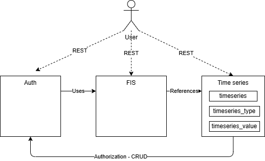

Time Series Service Design
This document outlines details about the time series functionality in the flexibility register.
Note
This functionality is not yet implemented. It is a design that we will use in further development of use-cases related to time series data.
Introduction
Given our investigations into time series data, we believe that a flexibility information system needs to store and distribute time series data. The first use cases that we are thinking of looking at are:
- calculate and report imbalance settlement adjustments to eSett
- enable end users to securely access their data in compliance with GDPR
Note
It is not given that FIS will become a data administrator for timeseries other than accounting meter data. We do not know exactly what data will flow through FIS. This design is therefore a light-weight, general purpose starting point and conceptual design for a time series service using our existing stack.
Design goals
- a general purpose time series design
- efficient storage of time series data in PostgreSQL
- we need to learn more about the usage patterns and functional requirements related to time series data before we should consider other data store(s)
- it will also likely take quite some time before we have enough data to warrant a change
- decouple time series as its own service/module for easier evolvement and possible replacement
Requirements
- handling of both point and interval time series
- multiple types of time series data
- observations - metered and measured values
- forecasts - baselines
- schedules - production and consumption plans
- prices - spot and balancing prices
- updateable time series - to correct errors or update baselines closer to the operation time
- bi-temporal storage and audit - to support corrections and reconciliation
- prevent duplication of time series - to help avoid "double registration" of assets in the system
- support multiple time series for the same level and origin - to allow testing multiple baselines concurrently
- invidual access - no current use cases for large scale aggregation or calculations similar to settlement jobs in Elhub
Limitations
- The OCI PostgreSQL service does not support extensions that allow for efficient column-major storage, such as Citus and TimescaleDB. We are therefore forced to use the row-major storage if we want to use this service.
Non-Requirements
- no completeness check upon storage ("Channel Milestione" in Elhub term) - completeness checks will be handled by the consumer
- no period volumes
Possible future needs
- calculations or formulas - the design should not shut out future calculations or formulas, but they are not in scope for the initial design
Inspiration
The following list contains some names and concepts from some reference systems we have looked at when thinking about time series data.
- Elhub
- MeasurementDefinition and IntervalVolume on MeteringPoint
- CIM
- IntervalReading/MeterReading of ReadingType on Channel of Register of Meter
- MeasurementValue on Measurement on PowerSystemResource and Terminal
- NODES MeteringHub
- MeterReadings on Asset, Accounting Point, Portfolio
- Shyft
- "A time series in Shyft is considered to be a function of time, f(t) -> float."
Design
We leverage the existing stack and way of doing things
- PostgreSQL for storage
- PostgREST to expose our restful API, but on a new path/api
- RLS for authentication
We model the timeseries as three resources.
timeseries- the time series identifier limited metadata- will include the external identifier for the time series, partially to avoid duplication of time series in the system
timeseries_type- a finite set of types of time series data. To avoid duplication information in thetimeseriestable. The fields are the "attributes" of the time series, not their "usage". Meaningthat we will e.g. record the unit, but not wether it is a schedule or metered value.timeseries_value- the values of the time series
API
The relevant API actions will be
POST /timeseries- create a new time series metadataGET /timeseries- list all time series metadataGET /timeseries/{id}- get a specific time series metadataPATCH /timeseries/{id}- update a time series metadataGET /timeseries_value?timeseries_id={id}- list all values for a time seriesGET /timeseries_value?timeseries_id={id}&time={time}- get a specific valuePOST /timeseries_value- add a timeseries valuePATCH /timeseries_value?timeseries_id={id}&time={time}- update a value for a time seriesDELETE /timeseries_value?timeseries_id={id}&time={time}- delete a value for a time series
Events or distribution
We can use our existing event system, but need to figure out a way to add a reasonable amount of events. Cannot do event-per-value.
History for bi-temporal storage
We will use the existing history concept and our pg_audit package to store
historic time series data.
Efficient storage of values
To store the time series as efficiently as possible, we can use two strategies:
- store as little as possible
- use column tetris to ensure efficient storage. Se also On Rocks and Sand
The biggest saving we can have is to avoid storing time ranges both for the
valid time of the interval and record time. We only store the record time and
the valid time start as a single tstz.
Our timeseries_value table will look something like this.
| Column Name | Type | Nullable | Size | Description |
|---|---|---|---|---|
| - | Row header | 24 | - | |
| timeseries_id | bigint | No | 8 | Unique identifier for the time series |
| time | timestamptz | No | 8 | The time of the value |
| recorded_by | bigint | No | 8 | The identity that recorded the value |
| recorded_at | timestamptz | No | 8 | The time the value was recorded |
| value | bigint | No | 8 | The value of the time series |
| quality | smallint | Yes | 2 | The quality of the value |
| validation_code | smallint | Yes | 2 | The history id of the value |
| estimation_code | smallint | Yes | 2 | Whether the value is an estimation |
| - | padding | 2 |
At a grand total of 80 bytes per row. It does not seem like much but storing a measly 100k timeseries with an interval of 15 over a year will take up over 260 GB of storage.
[!INFO]
A
tstzrange— range of timestamp with time zone - uses a variable lenght of storage depending on the presence of the lower and upper bounds. If both bounds are present.
- No bounds: 6 byte
- Lower bound only: 14 byte
- Upper bound only: 22 byte
Notice that we are not including an id column. This allows us to save 8 bytes
per row, plus avoid having the automatically created primary key index. What
will we do instead? See below.
Indexing and primary key
We will use a covering index on the time series table, to speed up read and update operations. By making it a unique index we can use it as a primary key.
CREATE UNIQUE INDEX timeseries_value_pkey
ON timeseries_value (timeseries_id, time)
INCLUDE (value);
ALTER TABLE timeseries_value
ADD CONSTRAINT timeseries_value_pkey
PRIMARY KEY USING INDEX timeseries_value_pkey;
Why?
- Going to the heap takes time/io - including value is low overhead, but potentially saves a lot of time.
- Indexes take up space and time to maintain. Using one index for both the primary key and the covering index saves space and time.
Numeric vs integer
The jury is out. Int is a good choice for exactness, but numeric is good for its
varlena storage.
PostgreSQL docs on numeric states
The type numeric [...] is especially recommended for storing monetary amounts and other quantities where exactness is required. Calculations with numeric values yield exact results where possible, e.g., addition, subtraction, multiplication. However, calculations on numeric values are very slow compared to the integer types, or to the floating-point types described in the next section.
Partitioning
Possibly weekly. Will be decided at a later time, when we have a better understanding of the volumes and access patterns.
Integration
The integration with the rest of the system will happen as shown below. This is a conceptual drawing of the integration. The main point is that the time series service will not reference the main FIS module, only the other way around. This is to decouple and make it independent of the FIS application.
When we create our data model in FIS, we will reference the time series by id. When seen from the time series service, it will not have any knowledge of what the time series are used for, just what they look like and their values.
The time series have very different technical requirements than the flexibility information system, such as volume and access patterns. It is also likely that it demands a different pattern for integration and technical foundation than the rest of the FIS.

Future external interfaces might also include
- bulk endpoints for large datasets - with asynchronous processing
- mqtt or simliar interfaces for real-time updates